Aqui serão fornecidas algumas orientações de natureza técnica para que você possa explorar o material deste curso.
A primeira coisa a se fazer, é escolher o navegador a ser utilizado. Veja a seguir alguns deles:
|
|
A escolha pelo navegador é feita levando em consideração dois motivos:
| 1) Familiaridade que o usuário tem com o navegador |
| 2) Performance |
Para saber mais sobre cada um dos navegadores apresentados, clique aqui!
Caso este seja o seu primeiro acesso à plataforma MOODLE, clique nas setas do quadro abaixo para visualizar as imagens explicativas sobre os recursos deste ambiente digital de ensino e sobre as aulas à distância:
Recursos do ambiente moodle
Na "aba atividade" que se encontra na parte lateral esquerda de sua tela. Clique em Recursos.
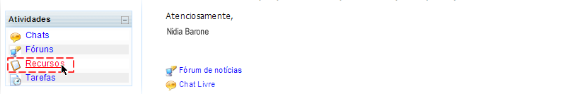|
Em seguida clique no título da aula que você deseja acessar. Uma nova janela será aberta com o conteúdo a aula. 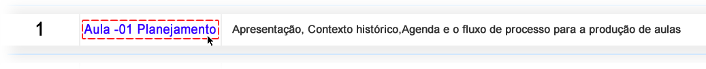 |
Recursos das aulas
| 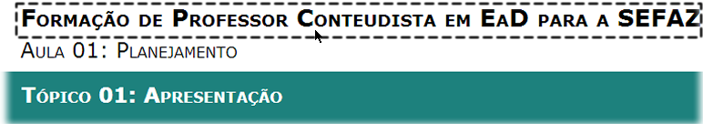 |
Este espaço indica o nome da Disciplina.
| 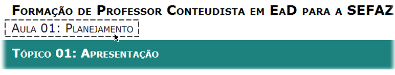 |
Este espaço indica o nome da Aula.
| 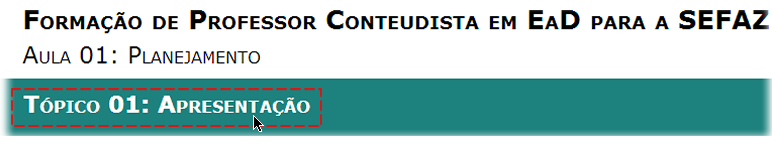 |
Este espaço indica o nome do Tópico Atual.
| 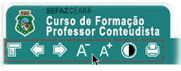 |
Nesta área localizam-se os botões de navegação da aula.
| 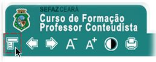 | Este botão é utilizado para navegar o tópico específico. |
| 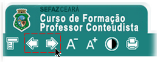 | Estes botões são utilizados para avançar e retroceder os tópicos da aula. |
| 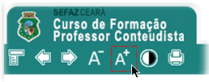 | Este botão aumenta a fonte da página. |
| 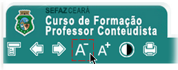 | Este botão diminui a fonte da página. |
| 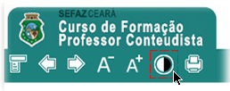 | Este botão habilita visualização em alto contraste. |
| 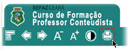 | Este botão realiza download de uma versão para impressão do tópico, em formato PDF. |
|
Para navegar no conteúdo da aula utilize a barra de rolagem |
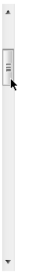 |
Támbem existe uma barra de navegação auxiliar na área de rodapé.
Caso seu navegador esteja com a restrição de segurança ativada, alguns recursos utilizados nesta aula não serão corretamente visualizados. Para contornar este problema, clique na barra de controle de segurança (ver figura 1); em seguida, escolha a opção que permite a execução de scripts e pop-ups. Para isto, clique no botão SIM (ver figura 2)
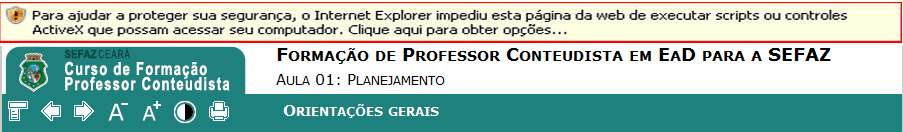Figura 1
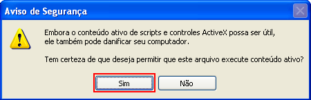Figura 2
Responsável: Professora Nidia Barone
Universidade Federal do Ceará - Instituto UFC Virtual